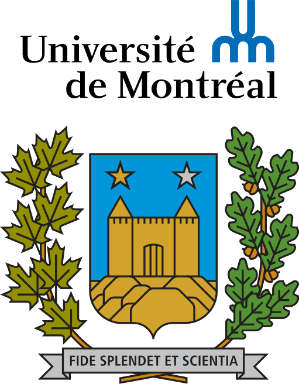

Dereck D. Piché
Curriculum Vitae
Academic Background
Research Master's, Mila & University of Montreal
October 2024 - Today
Under Aaron Courville.
 Honors Bachelor’s in Computer Science, University of Montreal
2021 - December 2023
My specialized bachelor’s degree provides me with a lot
of freedom in the choice of courses. As a result of my
interests, it is, compared to the typical computer
science bachelor, significantly more inclined towards
applied mathematics and machine learning.
Projects and Achievements
December 2023 - Today
Utero
Utero is a work-in-progress library for adaptive
algorithms written in Julia. It builds on no outside
dependencies and contains its own auto-differentiation
engine.
https://github.com/ScierKnave/Utero
2023 Tensor Network Compositions
Research on the use of tensor network methods for
machine learning with Professor Guillaume Rabusseau,
which is a core academic member of MILA.
https://github.com/ScierKnave/honor_project/blob/master/doc/rapport_projet_honor.pdf
2022 MNIST Sum Competition
Finished in the first position among bachelor’s students
in a Kaggle competition for classifying sums of pairs of
handwritten digits using data augmentation and an
ensemble of convolutional neural networks.
2021 Minimalist Chess Engine
Programmed a minimalist chess engine using the MinMax
algorithm (with α-β pruning).
https://github.com/ScierKnave/chess_bot
Professional Experience
January 2024 - Today
DIRO University Tutor
Employed by the department of computer science and
operations research of the University of Montreal to
help bachelor students in all their classes.
May 2023 - August 2023
Deep Learning Engineer, GPR Geophysics, Longueuil
Internship where I worked on a large-scale deep learning
geophysics project. I also did computer graphics to
contribute to the creation of synthetic data.
2022 - March 2023
Instructor, Combat Sports, Montreal
Greatly improved my social skills.
September 2017 - March 2021
Provisioner Assistant and Others, Fidélise, Gatineau
Working at Fidélise improved my teamwork capability and
organizational skills, as I had to collaborate with my
colleagues and perform various tasks in a short amount
of time as a delivery person, dishwasher, and assistant
provisioner.
Skills
- Applied Mathematics: Proficient in linear and multilinear algebra, multivariable calculus, and probability theory.
- Programming Languages: Advanced in Julia (including Flux), proficient in Python (including TensorFlow, PyTorch, Numpy, SciKit-Learn, and others), C, and Haskell (I have programmed a Lisp language compiler using this language for one of my classes).
- Machine Learning: Good understanding of many modern deep learning architectures (ResNets, CNN’s, Transformers) and the auto-differentiation programming infrastructure used to train them.
Soft Skills
- Strong aptitude for complex problem-solving.
- Efficient assimilation of new concepts from textbooks, notes, slides and documentation.
- Quick adaptation to new challenges.
- Effective in team environments.
- Proficient in conveying complex ideas.
Languages
- Fluent in English and French.